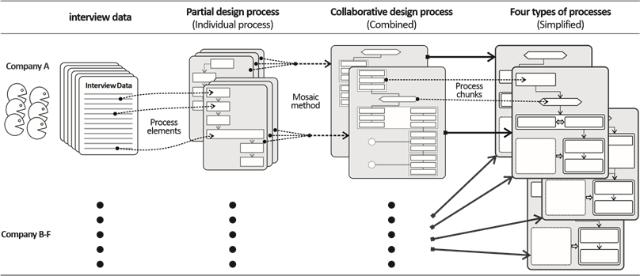

Assignment1 <<
Previous Next >> Assignment3
Assignment2
2a類將於2020年4月22日到期，2b類將於2020年4月23日到期。
-
根據主題0和主題1的材料，您能否具體描述機械設計團隊為完成分配1的四輪機器人需要做什麼。
Collaborative product design processes ofindustrial design and engineering design inconsumer product companies
工程設計和工業設計對向市場推出成功產品至關重要，產品設計很難從單一學科的角度來解釋。”協同產品設計”是指工業設計和電子設計合作貢獻而創造的產品設計，特別是在公司環境中，協同產品設計涉及一系列設計活動，比如說創建最初產品概念、內部規格決策以及外觀和內部結構的開發。
1.研究方法
為了研究協作產品設計過程的類型和相關條件，我們設計的「馬賽克方法」，以重建工業設計師和工程設計師之間的協同設計過程。基礎理論方法在社會科學中被廣泛採用，作為為較少研究領域建立理論的系統方法,而在設計研究中，它已被長期採用。實際設計過程及其與上下文相關的特徵可以從實際設計項目中確定，這可能不同於公司記錄的設計流程。比較兩者將提供洞察力。但是,我們無法收集它們，因為它們被視為對外部保密。相反，我們詢問受訪者，他們的公司是否有有文檔記錄的標準設計流程，以及它是否與實際設計流程不相讓。
1.1深入訪談
1.1.1案列公司的選擇
為了提高適用性，設計過程應在公司的背景和環境範圍內理解因此，我們設定了三個標準，通過對案例公司進行探索。通過的三項標準如下:
(1) 這些公司應該生產中複雜的電子消費品。
(2) 他們應該有獨立的工業設計和工程設計部門。

圖1 研究專業
(3) 他們應該是市場領先的公司，生產設計良好的高品質產品。
第一個標準使在產品領域環境中具有類似條件的製造商得以選擇，其中工業設計師和工程設計師都扮演著重要的角色。
1.1.2 受訪者的選擇
我們選擇了有目的和snowball採樣方法的被採訪者。每家公司的看門人都建議他們的設計師，而設計師又推薦了同事。在這樣做的同時，我們選擇了符合以下三個標準的被採訪者:
(1) 兩年以上在company的經驗
(2) 參與產品開發過程的至少一個週期
(3) 與同行(即工業設計師與工程設計師)密切協作和互動
1.1.3 面試程式
我們採用了半結構化的深入面試方法，遵循文獻的建議指導。我們首先列出了大約20個詳細的問題，並將其分為四個主題:(1)個人資訊(2)設計過程(3)角色和專業知識(4)互動。然後，我們提出了四個關鍵問題:
(1) 你在隊里的位置和位置是什麼?
(2) 產品設計流程如何進行，過程中發生了什麼?
(3) 您在設計過程中有哪些任務，執行專案需要哪些知識和技能?
(4) 工業設計(工)和工程設計在設計過程中如何相互作用?
表1 案例公司資訊
|
公司
|
商務領域
|
工業設計師人數
|
工程設計師人數
|
|
公司 A
|
家電
|
10e20
|
50e100
|
|
公司 B
|
IT 產品
|
5.e10
|
5.e10
|
|
公司 C
|
移動通信
|
40e50
|
50e100
|
|
公司 D
|
移動通信
|
50e100
|
100e200
|
|
E 公司
|
安全設備
|
5.e10
|
20e30
|
|
公司 F
|
家電
|
5.e10
|
30e40
|
1.2 識別設計流程
1.2.1 確定每個人經歷的設計流程
雖然所有轉錄的數據都載有與設計過程有關的資訊，但它們都與其他內容混合在一起，包括專案的情況和目標、個人的作用、必要的技能和知識、行為者之間的衝突、彼此的感知圖像等。我們首先通過審查相關文獻來確定過程要素用於構建設計過程的"過程元素"，從而制定了編碼框架。我們多次通過多次抄錄公司的採訪記錄來證實他們。關於過程建模的兩種觀點，觀看過程作為資訊處理和狀態轉換系統，為流程建模的流程元素編碼類別提供了有意義的線索。
進入狀態轉換，有兩個活動:執行任務和評估結果。大多數情況下，評估發生在相對較短的時間段內，以決定"前進、重複或下降"。因此,我們把這類活動(評估、設計重新查看、門查、決策)命名為"事件"。在此關頭，我們有兩個編碼類別;'任務'和'事件'。最後,我們可以對設計過程進行四個編碼類別的建模;'任務'''事件',"資訊流"和"交互"，可以表示與階段的連接。此時，設計過程的階段可以使用「輸入e工作(設計活動)ee事件(決策)ee輸出「來表示。下面介紹了如何使用上述四個編碼類別對流程元素進行編碼。
任務:清除設計人員執行的任務,如"創意草圖"、"3D 建模"等。答辯人說;是的,我用圓珠筆做素描來表達我的想法。很少著色或掃描它，以修飾 Photoshop。'我們將其編碼為一個任務類別，標籤為"創意草圖"。
事件:在特定任務之後，事件(決策)繼續進行，從而導致下一個操作。答辯人說;我們去類比公司製作原型，並帶來所有兩個或三個原型。與他們舉行模擬評估會議。工程師們聽了老闆的批評。老闆說，這是，也就是說，那麼如果工程師有不同的想法，他們提供的意見。.(省略). 最後選擇了一個。我們在事件類別中使用標籤"類比評估會議"對其進行編碼。資訊流:當發生任務或事件時生成資訊流。它總是伴隨著輸入和輸出。答辯人說;事實上，我們根據從工程設計公司收到的規範開展工作。在有事到達之前，我們不會開始工作。描述工業設計師從工程設計師那裡收到"規範數據"作為輸入,他們開始工作。我們將此"從 ED 的規範數據編碼為 ID」。另一個摘錄是，選擇模型后，我們將模型的 3D 數據傳遞給工程部門。
Assignment1 <<
Previous Next >> Assignment3